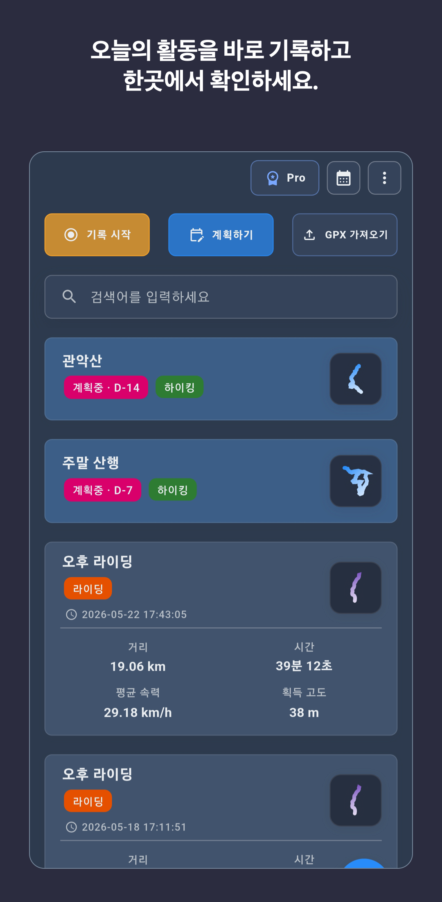

하이킹은 고도와 GPX, 자전거는 속도와 반복 경로, 러닝은 페이스와 완료 후 복기가 중요한지 확인합니다.
하이킹·자전거·러닝 경로 기록 앱을 고르는 기준
유명한 앱보다 내 활동 방식에 맞는 앱이 오래 쓰기 좋습니다. 경로 기록, GPX, 데이터 보관, 백업, 오프라인 준비, 분석 기능을 기준으로 확인하세요.

먼저 확인할 세 가지
내가 실제로 자주 할 작업과 데이터 보관 방식을 먼저 정하면 후보를 빠르게 줄일 수 있습니다.
계정과 클라우드 동기화가 기본인지, 기기에 먼저 저장하고 필요할 때만 백업하는지 비교합니다.
기본 기록, GPX, 백업, 오프라인 지도, 계획, 분석이 각각 어느 요금제에 포함되는지 확인합니다.
RouteTracker 기능과 요금제 경계
아래 표는 현재 공개된 RouteTracker 기능을 선택 기준에 맞춰 정리한 것입니다.
| 필요한 작업 | RouteTracker에서 가능한 일 | 제공 범위 |
|---|---|---|
| 하이킹·자전거·러닝·걷기 기록 | 경로 지도와 거리, 시간, 속도 또는 페이스, 고도 같은 핵심 지표를 기록하고 완료 활동을 다시 봅니다. | 기본 |
| GPX 경로 사용 | GPX를 가져와 지도에서 확인하고 경로를 참고하며 기록한 뒤, 완료 활동을 GPX로 내보냅니다. | 기본 |
| 기기 우선 데이터 보관 | 회원가입 없이 핵심 기록을 시작하고, 백업을 선택하기 전까지 활동 이력을 기기에 저장합니다. | 기본 |
| Google Drive 백업·복원 | 사용자가 연결하고 승인한 Google Drive 범위 안에서 수동 또는 자동 스냅샷 백업과 복원을 사용합니다. | Plus · Pro |
| 경로 계획과 오프라인 준비 | 지도 위 경로 계획, 고급 지도 스타일, 경로 주변 오프라인 캐시 기능을 사용합니다. | Pro |
| 반복 기록 분석과 Local AI | 구간 비교, 성장 그래프, 속도·페이스·고도·반복 경로 흐름에 대한 기기 내 참고 분석을 확인합니다. | Pro |

RouteTracker가 잘 맞는 경우
- 여러 활동 종류를 한 앱에서 기록하고 캘린더와 상세 화면으로 복기하고 싶습니다.
- GPX 경로를 가져오고 완료한 기록을 다시 GPX로 내보내고 싶습니다.
- 계정 생성보다 기기 기반 기록을 먼저 시작하고 싶습니다.
- 기록이 쌓인 뒤에만 Google Drive 백업이나 고급 분석을 선택하고 싶습니다.
- 개인 활동 이력과 다음 활동 준비가 소셜 피드보다 중요합니다.
활동별로 볼 것
- 하이킹: 경로와 고도, 메모, GPX 흐름을 확인하고 장거리 산행 전에는 배터리와 오프라인 준비를 직접 시험합니다.
- 자전거: 속도, 고도, GPX 호환성과 같은 경로를 반복했을 때 비교할 방법을 봅니다.
- 러닝: 페이스, 거리, 고도, 리캡 카드와 완료 후 시작·종료 구간 정리 흐름을 봅니다.
선택 전에 알아둘 한계
RouteTracker는 개인 경로 기록과 복기에 초점을 둡니다. 커뮤니티 피드, 클럽, 리더보드가 핵심이라면 해당 기능을 중심으로 제공하는 서비스도 함께 비교하세요.
백업과 고급 기능에는 Plus 또는 Pro가 필요합니다. GPS 정확도와 배터리 사용량은 기기와 환경에 따라 달라지므로 중요한 야외 활동 전에 짧은 시험 기록을 권장합니다.
세부 기능 확인
앱을 설치하기 전에 필요한 흐름과 데이터 처리 범위를 더 자세히 확인할 수 있습니다.
가져오기, 지도 확인, 경로를 참고한 기록, 완료 활동 내보내기 흐름을 확인합니다.
기기 우선 저장, Plus/Pro 백업 범위, 복원 조건을 확인합니다.
기기 내 분석이 사용하는 활동 데이터, Pro 조건, 참고용 분석 한계를 확인합니다.
자주 묻는 질문
RouteTracker를 경로 기록 앱 후보로 검토할 때 필요한 핵심 내용입니다.
하이킹·자전거·러닝을 한 앱에서 기록할 수 있나요?
네. RouteTracker는 iPhone과 Android에서 하이킹, 자전거, 러닝, 걷기 경로를 기록하고 지도, 거리, 시간, 속도 또는 페이스, 고도와 함께 완료 활동을 관리합니다.
GPX 가져오기와 내보내기는 무료 핵심 기능인가요?
RouteTracker의 핵심 경로 기록 흐름에서 GPX 경로를 가져와 지도에서 확인하고, 완료한 활동을 GPX 파일로 내보낼 수 있습니다. 파일 첨부 같은 확장 기능은 Plus 이상이 필요합니다.
RouteTracker가 잘 맞지 않을 수 있는 경우는 무엇인가요?
RouteTracker는 개인 경로 기록과 복기에 초점을 둡니다. 커뮤니티 피드, 클럽, 리더보드가 앱 선택의 핵심이라면 해당 기능을 중심으로 제공하는 서비스도 함께 비교하는 편이 좋습니다.
의료 또는 안전 앱으로 사용할 수 있나요?
아니요. RouteTracker는 운동 경로 기록 앱이며 의료기기나 구조·안전 보장 서비스가 아닙니다. 활동 지표와 Local AI 분석은 참고용입니다.